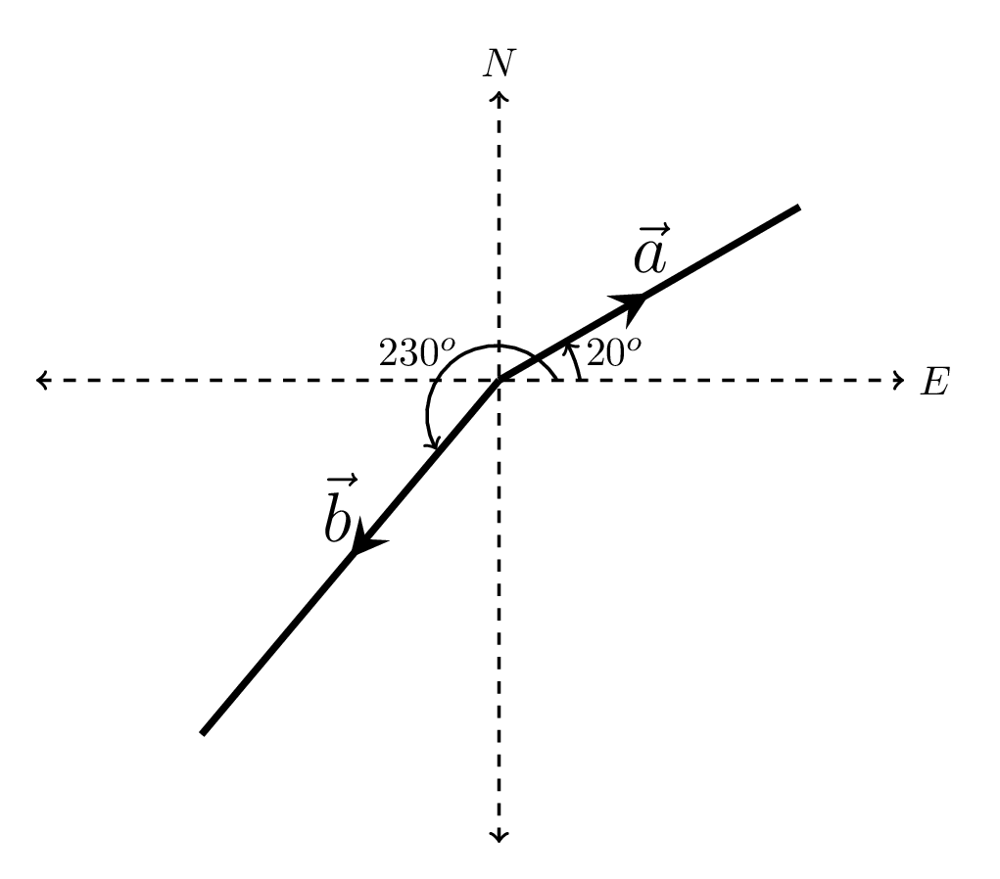
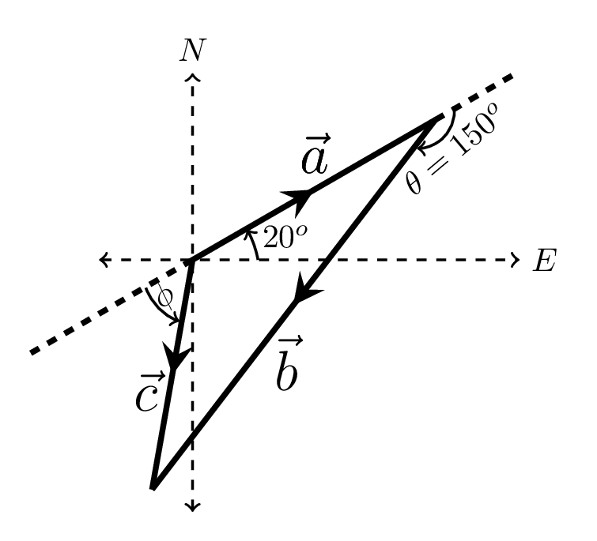
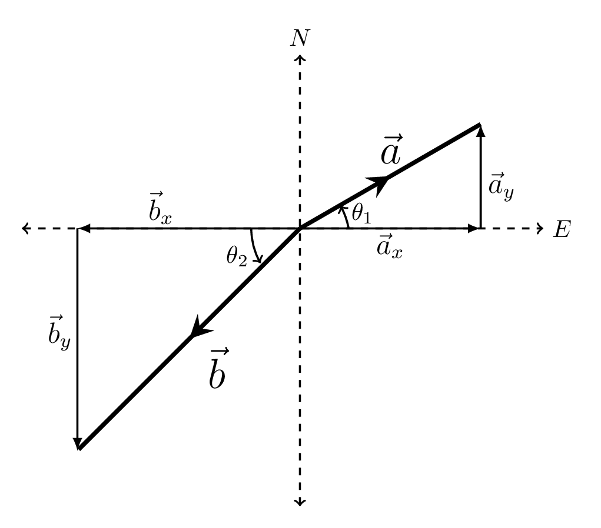
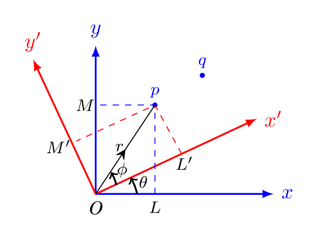

Section 2.2 Examples
Write the vector equations for the following diagrams.


Solution.
- Do your self
- Do your self
- As from Figure 2.2.2.(c), we can write resultant of \(\vec{a}\) and \(\vec{b}\) as \(\vec{a}+\vec{b}\) given by dotted lines. Hence, \((\vec{a}+\vec{b})+(\vec{c}+\vec{d})=\vec{e}\)
- As from Figure 2.2.2.(d), we can write\begin{equation*} \vec{r}_{1}=\vec{a}+\vec{b}, \end{equation*}\begin{equation*} \vec{r}_{2}=\vec{r}_{1}+\vec{c}=(\vec{a}+\vec{b})+\vec{c}, \end{equation*}and\begin{equation*} \vec{e}=\vec{r}_{2}+\vec{d} \end{equation*}\begin{equation*} \therefore \vec{e}=\vec{a}+\vec{b}+\vec{c}+\vec{d} \end{equation*}
Example 2.2.3.
Find the magnitude and direction of
- \(\displaystyle \vec{a}+\vec{b}\)
- \(\displaystyle \vec{a}-\vec{b}\)
if \(\vec{a}=3\hat{i}+4\hat{j} +2\hat{k}\) and \(\vec{b}=4\hat{i}-\hat{j} -2\hat{k}.\)
Solution.
- \(\vec{a}+\vec{b} =7\hat{i}+3\hat{j}\)\begin{equation*} | \vec{a}+\vec{b} |= \sqrt{(\vec{a}+\vec{b})\cdot (\vec{a}+\vec{b})} = \sqrt{49+9}=\sqrt{58} \end{equation*}
- \(\vec{a}-\vec{b} =-\hat{i}+5\hat{j}+4\hat{k}\)\begin{equation*} | \vec{a}-\vec{b} |= \sqrt{(\vec{a}-\vec{b})\cdot (\vec{a}-\vec{b})} = \sqrt{1+25+16}=\sqrt{42} \end{equation*}
Example 2.2.4.
The magnitude of two vectors \(\vec{a}\) and \(\vec{b}\) are 20 and 40, respectively. Vector \(\vec{a}\) is pointed along \(20^{o}\) north of east and vector \(\vec{b}\) is pointed along \(230^{o}\) south of west. Find the magnitude and direction of

- \(\displaystyle \vec{a}+\vec{b}\)
- \(\displaystyle \vec{a}-\vec{b}\)
Solution.
(a)
(b)
Figure 2.2.5.
This problem can be solved by two different ways, one way is using head and tail rules as shown in Figure 2.2.5.(a), here
\begin{equation*}
\vec{c}=\vec{a}+\vec{b}
\end{equation*}
its magnitude can be found by using relation  1 
\begin{equation*}
c =\sqrt{a^{2}+b^{2}+2ab\cos\theta}
\end{equation*}
\begin{equation*}
=\sqrt{20^{2}+40^{2}+2\times 20\times 40\times \cos 150^{o}} = 24.78
\end{equation*}
its direction can be found by using relation
\begin{equation*}
\phi=\tan^{-1}\left(\frac{b\sin\theta}{a+b\cos\theta}\right) = -53^{o}-20^{o}=-73^{o}\quad \text{(S of W)}
\end{equation*}
We add \(20^{o}\) in \(\phi\) to find the direction of resultant vector from x-axis.
Another way is to resolved these two vectors into component vectors and then find resultant of the corresponding components along x and y axes. From Figure 2.2.5.(b), we have
\begin{equation*}
a_{x}=a\cos\theta_{1} = 20\cos 20^{o}=18.79;\quad a_{y}=a\sin\theta_{1}=20\sin 20^{o} = 6.84
\end{equation*}
\begin{equation*}
b_{x}=b\cos\theta_{2}= 40\cos 50^{o}=25.71;\quad b_{y}=b\sin\theta_{2}=40\sin 50^{o}=30.64
\end{equation*}
\begin{equation*}
\therefore\quad R_{x}=a_{x}-b_{x} = -6.92 \quad \text{and}\quad R_{y}=a_{y}-b_{y} =-23.8
\end{equation*}
Hence \(R = 24.78\text{,}\) and \(\phi = \tan^{-1}\left(\frac{R_{y}}{R_{x}}\right)= 73.78^{o}\) (S of W).
Example 2.2.6.
Find the magnitude of a vector \(\vec{c}\) in the vector equation \(\vec{a}+2\vec{b}-3\vec{c}=-4\hat{j}\text{,}\) where \(\vec{a} =\hat{i}-2\hat{k}\) and \(\vec{b} =-\hat{j}+\hat{k}\text{.}\)
Solution.
\begin{equation*}
\vec{a}+2\vec{b}-3\vec{c}=-4\hat{j}
\end{equation*}
\begin{equation*}
\text{or,}\quad (\hat{i}-2\hat{k}) +2(-\hat{j}+\hat{k})-3\vec{c}=-4\hat{j}
\end{equation*}
\begin{equation*}
\text{or,}\quad -3\vec{c}=-4\hat{j}-\hat{i}+2\hat{k} +2\hat{j}-2\hat{k}=-\hat{i} -2\hat{j}
\end{equation*}
\begin{equation*}
\text{or,}\quad \vec{c} = \frac{1}{3}(\hat{i}+2\hat{j})
\end{equation*}
\begin{equation*}
\therefore \quad |\vec{c}| = c = \sqrt{\frac{1}{9}(1+4)} = \sqrt{\frac{5}{9}} =\frac{1}{3}\sqrt{5}
\end{equation*}
Example 2.2.7.
Show that the distance between points in a plane do not change by rotating a coordinate system.
Solution.
Figure 2.2.8.
Let p and q be two points in space. Now from Figure 2.2.8 at right, we have -
\begin{equation*}
x'=OL'=r\cos\phi
\end{equation*}
\begin{equation*}
\text{and} \quad y'= PL'=r\sin\phi\text{.}
\end{equation*}
\begin{equation*}
\text{Also} \quad x =OL=r\cos (\theta+\phi)
\end{equation*}
\begin{equation*}
\text{and} \quad y= PL=r\sin (\theta+\phi)
\end{equation*}
\begin{equation*}
\text{Now,} \quad x=r(\cos\theta\cos\phi-\sin\theta\sin\phi)=r\cos\phi\cos\theta-r\sin\phi\sin\theta
\end{equation*}
\begin{equation*}
\therefore\quad x = x'\cos\theta -y'\sin\theta
\end{equation*}
\begin{equation*}
\text{Again,} \quad y=r(\sin\theta\cos\phi-\cos\theta\sin\phi)=r\cos\phi\sin\theta+r\sin\phi\cos\theta
\end{equation*}
\begin{equation*}
\therefore\quad y = x'\sin\theta +y'\cos\theta
\end{equation*}
On solving these equations we get -
\begin{equation*}
x' = x\cos\theta + y\sin\theta
\end{equation*}
\begin{equation*}
\text{and}\quad y' = -x\sin\theta + y\cos\theta
\end{equation*}
The distance between points \(p(x_{1},y_{1})\) and \(q(x_{2},y_{2})\) in xy coordinate system is given by
\begin{equation*}
d=pq=\sqrt{(x_{2}-x_{1})^{2}+(y_{2}-y_{1})^{2}}
\end{equation*}
\begin{equation*}
=\sqrt{[(x'_{2}-x'_{1})\sin\theta + (y'_{2}-y'_{1})\cos\theta}]^{2} =\sqrt{(x'_{2}-x'_{1})^{2}+ (y'_{2}-y'_{1})^{2}}
\end{equation*}
which is the distance between points \(p(x'_{1},y'_{1})\) and \(q(x'_{2},y'_{2})\) in x’ y’ coordinate system, i.e., the distance between two points is invariant upon the rotation of a coordinate system.
Example 2.2.9.


Given the vectors in Figure 2.2.10.(a). Do the following:
- From the scale on the diagram, estimate the magnitude of each vector, its x-component, and its y-component.
- From the numbers on the diagram, calculate each vector and its magnitude.
- Construct the vector sum of these vectors.
- From the above components calculate the resultant of the four vectors.
- Calculate the magnitude of the resultant vector.
- What is the angle the resultant makes with the x-axis?
Solution.
- \begin{equation*} A = 10m; \quad A_{x} =A\sin37^{o}= 6.018 \approx 6m; \end{equation*}\begin{equation*} A_{y}=A\cos37^{o}=7.986 \approx 8m \end{equation*}\begin{equation*} B = 10m;\quad B_{x}= B\cos45^{o}=7.07 \approx -7m; \end{equation*}\begin{equation*} B_{y} = B\sin45^{o}= 7.07 \approx 7m \end{equation*}\begin{equation*} C = 10m;\qquad C_{x} = -8m; \qquad C_{y} = -6m \end{equation*}\begin{equation*} D = 10m;\qquad D_{x} = 9m; \qquad D_{y} = -5m \end{equation*}\begin{equation*} \left[\theta_{c}\approx 36.87^{o}; \quad \theta_{d}\approx 30^{o} \quad\text{from x-axis}\right] \end{equation*}
- \begin{equation*} \vec{A} = 6m\hat{i} +8m\hat{j}; \quad A = 10m \end{equation*}\begin{equation*} \vec{B} = -7m\hat{i} +7\hat{j}; \quad B =10m \end{equation*}\begin{equation*} \vec{C} = -8m\hat{i} -6m\hat{j};\quad C = 10 \end{equation*}\begin{equation*} \vec{D} = 8.66m\hat{i} -5m\hat{j}; \quad D =10m \end{equation*}Note: Distance between points, \(d=\sqrt{x^{2}+y^{2}}\text{.}\)
- \begin{equation*} \vec{R} = \vec{A}+\vec{B}+\vec{C}+\vec{D} \end{equation*}\begin{equation*} =(6-7-8+8.66)\hat{i}+(8+7-6-5)\hat{j} =-0.34\hat{i}+4\hat{j} \end{equation*}The resultant vector is plotted in Figure 2.2.10.(b).
- \begin{equation*} R = -0.34m\hat{i} +4m\hat{j} \end{equation*}
- \begin{equation*} R = \sqrt{-0.34^{2}+4^{2}}=4.01m \end{equation*}
- \begin{equation*} \theta = \tan^{-1}\left(\frac{4}{-0.34}\right) =(180-85)=95^{o} \end{equation*}
Example 2.2.11.
Two points \(A\) and \(B\) in the xy plane have the respective Cartesian and polar coordinates \((3 m, - 4 m)\) and \((15 m, 30^{o})\text{.}\)
- What are the polar coordinates of the first point?
- What are the rectangular coordinates of the second point?
- What is the distance between the two points?
Solution.
- \((5m,-53.13^{o})\)\begin{equation*} A=\sqrt{x^{2}+y^{2}} ; \quad \theta = tan^{-1}\left(\frac{-4}{3}\right) \end{equation*}
- \(( 13m,7.5m )\)\begin{equation*} x=B\cos\theta;\quad y=B\sin\theta \end{equation*}
- \begin{equation*} AB=\sqrt{(x_{2}-x_{1})^{2}+(y_{2}-y_{1})^{2}}=15.24m. \end{equation*}
see appendix